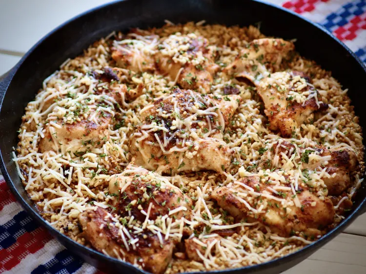

Home
Chicken with Rice Recipe

Description
Chicken with rice is a simple and comforting dish made by cooking tender chicken
together with flavorful rice and basic seasonings. The chicken juices blend with
the rice during cooking, creating a savory and satisfying meal that is both
delicious and filling.
This recipe is great for beginners because it uses easy ingredients and simple
steps. Chicken with rice can be served as a complete meal and can be paired with
vegetables or a light sauce for extra flavor. It is perfect for lunch or dinner
and can be prepared in one pan or pot.
Ingredients
- 2 cups rice
- 2 chicken breasts or thighs
- 2 cups chicken broth or water
- 1 small onion, chopped
- 2 cloves garlic, minced
- 1 tablespoon cooking oil
- 1 teaspoon salt
- 1/2 teaspoon black pepper
Steps
- Wash the rice under cold water until the water runs clear.
- Heat cooking oil in a pot or pan over medium heat.
- Add the chopped onion and garlic, and cook until fragrant.
- Add the chicken pieces and cook until lightly browned.
- Add the rice, chicken broth, salt, and pepper to the pot.
- Bring the mixture to a boil, then reduce the heat to low.
- Cover and cook for about 15–20 minutes until the rice is tender and the chicken is fully cooked.
- Serve warm and enjoy your chicken with rice.